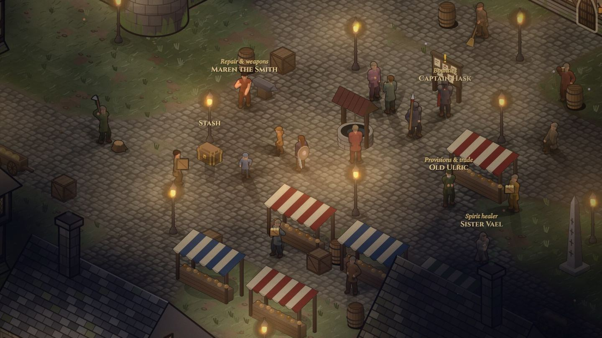
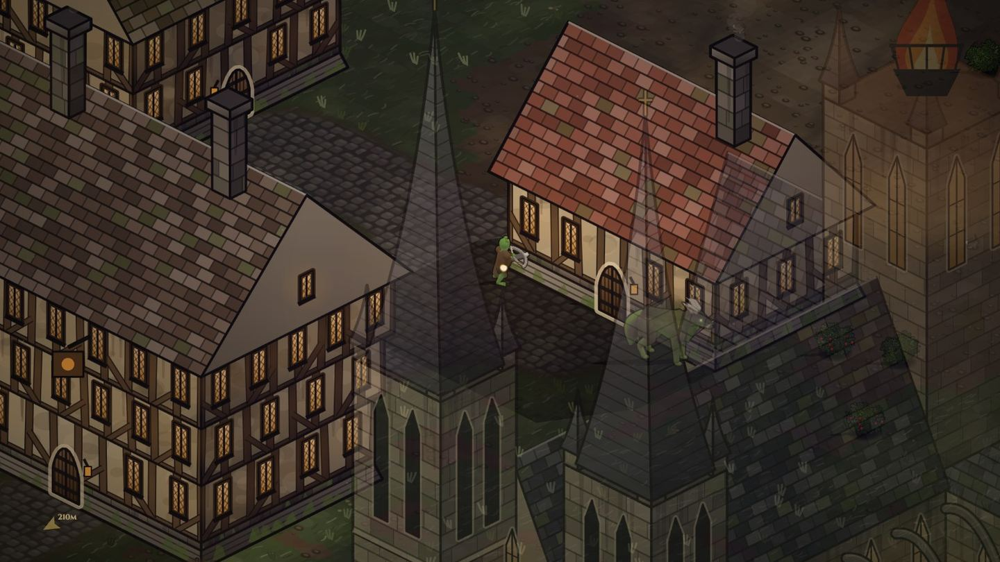
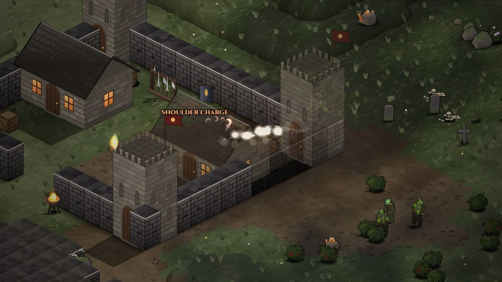
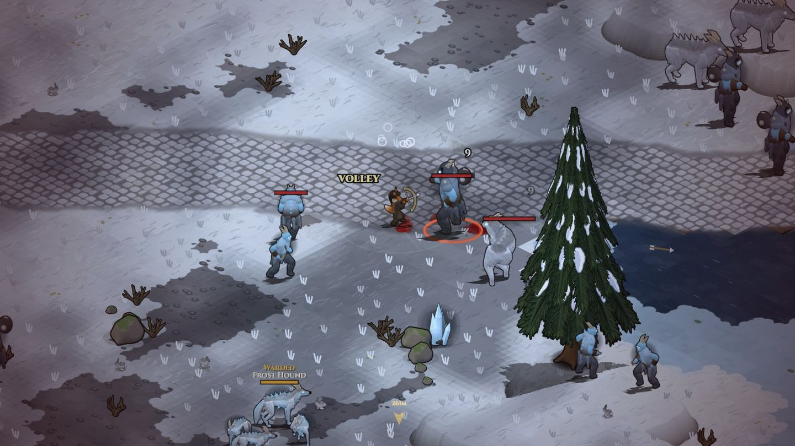
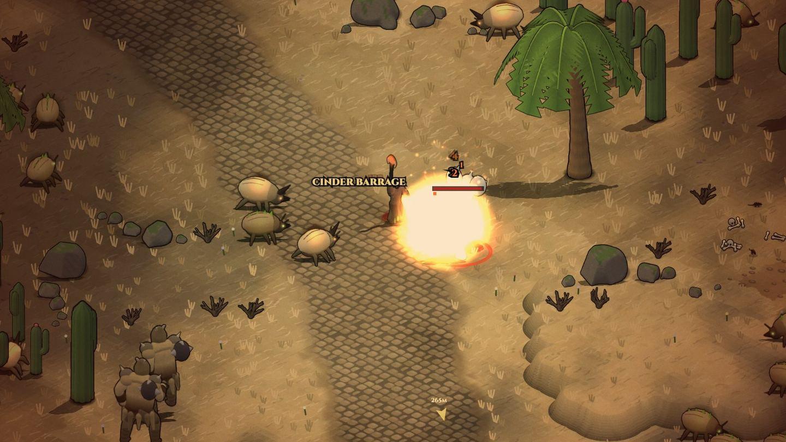
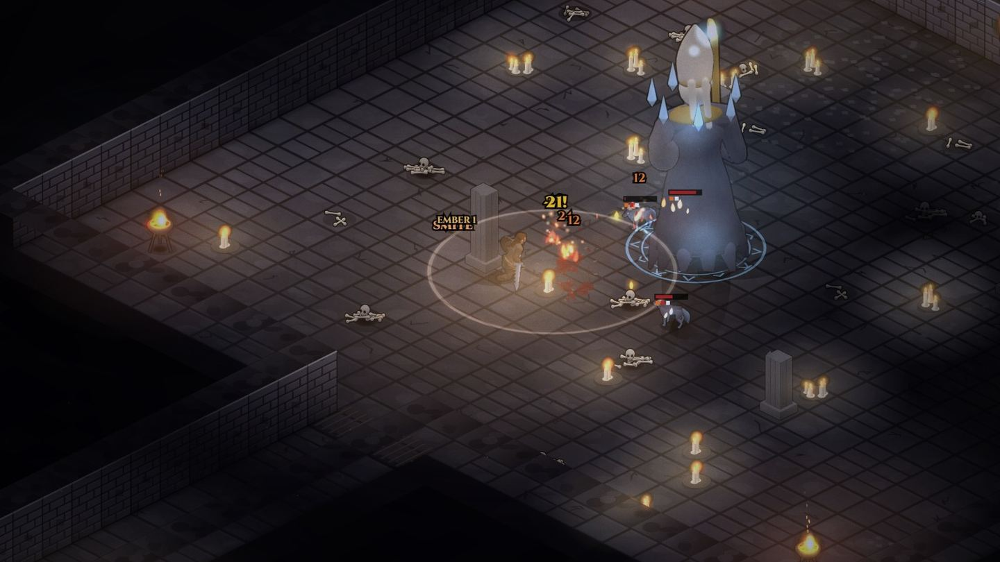
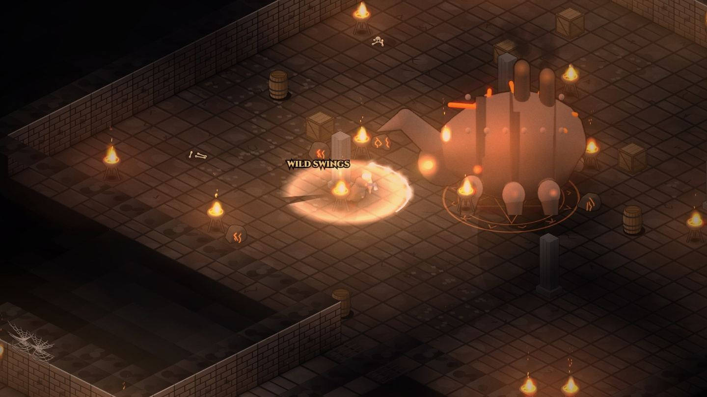
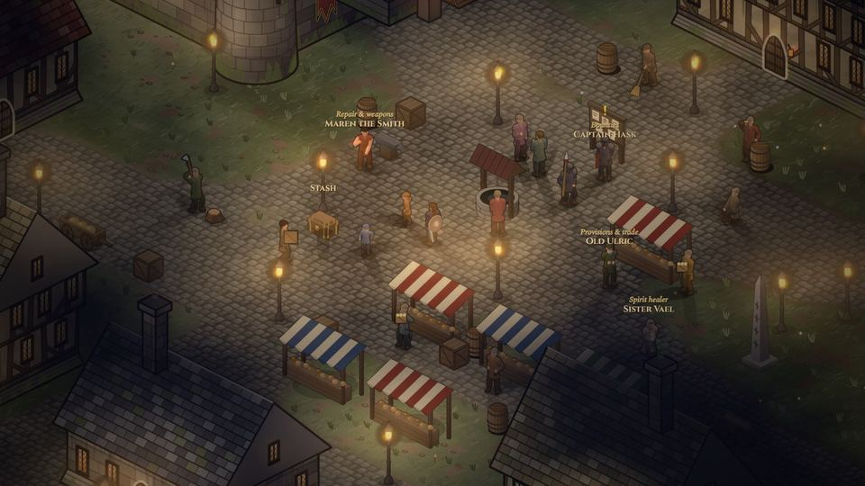
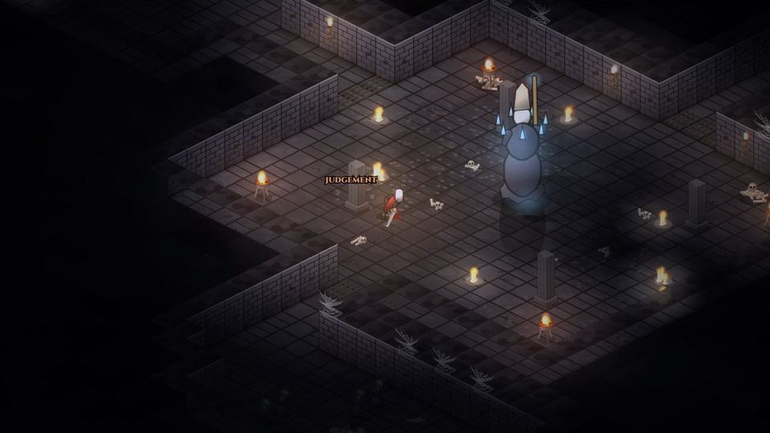
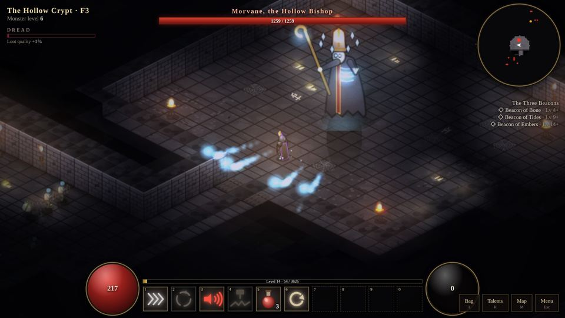

Gravenhold, the last lit town
Under the keep and the cathedral, the market still trades and Captain Hask still posts bounties. Beyond the walls, the dead no longer stay buried.
Raise your own hearth on the ruins of a dead one. You choose what to build and your villagers raise it over time. Crops grow in real time, even while you're away, and salvage fills your storehouse.

The wilds hunt back
Named monsters roam the Barrow Fields, the Blightwood, the Mirefen and the Cinderwaste. Raiders hold a walled fort in every land, and when all three beacons burn, the Dread Rifts open.


Every swing is yours
Move with WASD and aim with the mouse. Chain light and heavy attacks into combos, roll through a wind-up, block, and time your parries.
Weapons are built from parts that change how they fight, and fire, frost, lightning and poison combo off each other.

The deep is never the same twice
Every dungeon is rebuilt when you enter, with traps, ambushes and rising Dread, and a boss at the bottom. Clear it and it comes back deeper and richer. Below the mountains, the caves go down two floors more.


Waiting at the bottom
24 heroes, sixteen peoples
Play as a human or a dwarf, a crow-headed Rookfolk, an ash-skinned Ashborn, a Croakfolk, a Shellback or a Pandakin, and choose how they fight.
The road from 1 to 60
Ten more lands lie past the Hollowmark, each with a camp, a fort and dungeons of its own, all the way to the edge of everything.
Forged in the open
Emberwrought is made by one developer, in public, a build at a time.

A grand keep, a cathedral and forts in every land
Gravenhold rebuilt and relit, a walled fort for each land's raiders, caves under the mountains, and sixteen peoples to play.

Monsters in 3D, stances, blocks and parries
The bestiary moved to 3D models, and fights gained blocking, parries and stances.

The first playable build
Gravenhold, three dungeons and their bosses, playable free in the browser on itch.io.
The fire returns in 2027
Sign up for the closed alpha this December, or join the community to follow the build.